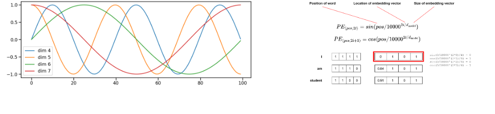
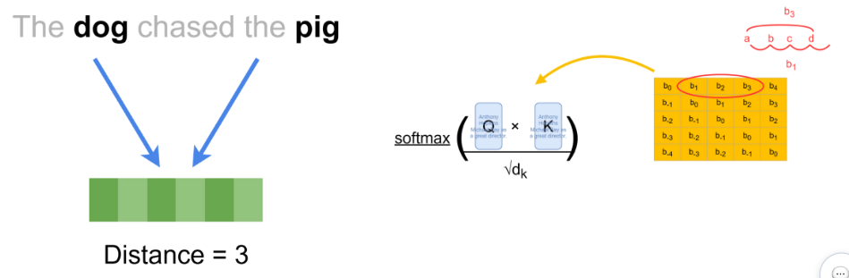
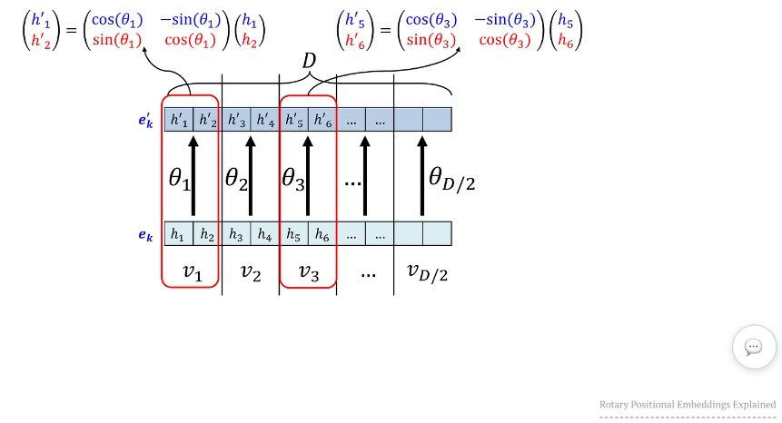

08. 위치 정보와 RoPE - 같은 토큰의 순서를 계산에 넣기
토큰 임베딩은 ‘무슨 토큰인가’를 나타내지만 그 토큰이 어디에 놓였는지는 별도로 주어야 합니다. 이 장에서는 위치를 입력 벡터에 더하는 방식, Attention 점수에 상대 거리 편향을 더하는 방식, Q·K를 회전시키는 방식을 구별합니다. 학습 목표는 덧셈과 회전의 적용 대상을 설명하고, 두 위치를 함께 옮겼을 때 RoPE 내적이 어떻게 되는지 계산하는 것입니다. 벡터의 좌표별 덧셈과 내적만 알면 읽을 수 있습니다. 내적은 같은 길이의 두 벡터 좌표를 곱한 뒤 모두 합한 값입니다.
1. 위치는 왜 필요한가
원문 89쪽: Tom ate the meat와 The meat ate Tom은 단어가 같아도 행위자와 대상이 바뀝니다. 같은 토큰을 같은 임베딩 표에서 찾으면 그 행은 같으므로 표 조회만으로 위치를 알 수 없습니다. 위치 정보 없는 비마스킹 self-attention은 입력 위치를 순열로 바꾸면 출력도 그에 맞추어 바뀌는 성질을 가지며, 이것만으로 고유한 순서 좌표를 만들지 않습니다. causal mask는 참조 가능한 과거 범위를 제한하는 역할이므로 구체적인 거리 표현과 구별해야 합니다.
원문 아래 도표의 토큰 벡터는 네 위치 모두 (1,1,1)입니다. 위치 벡터 (1.1,1.2,1.3), (2.1,2.2,2.3) 등을 더하면 입력 벡터는 (2.1,2.2,2.3), (3.1,3.2,3.3) 등이 됩니다. 이는 덧셈을 보여주는 임의 숫자이며 실제 위치 인코딩의 표준 값은 아닙니다. 같은 단어라도 위치별 결과가 달라진다는 점을 확인합니다.
원문은 시퀀스 길이에 관계없이 같은 위치를 일관되게 표현하고 위치 값의 크기가 내용을 압도하지 않도록 할 것을 제시합니다. 이는 설계상 고려 사항이며 모든 방식에 동일한 최대 수치가 있다는 뜻이 아닙니다. 위치 0부터 셀지 1부터 셀지, padding 위치를 어떻게 셀지는 구현 전체에서 일관되어야 합니다.
2. 절대 위치 표와 삼각함수
학습된 절대 위치 임베딩은 위치 p에 대한 표 P의 행을 조회해 X[p]=E[token[p]]+P[p]로 더합니다. 두 벡터 폭이 같아야 덧셈이 가능합니다. 예를 들어 E[11]=(1,0,2,-1), P[0]=(.1,.2,0,0)이면 (1.1,.2,2,-1)입니다. 표 밖의 위치는 그대로 조회할 수 없으므로 최대 위치와 확장 방법을 확인해야 합니다.
원문 90~91쪽: 고정 삼각함수 방식도 절대 위치 방식입니다. 학습된 표와 구별하세요. 폭 d가 짝수이고 좌표쌍 번호 i가 0부터 d/2−1까지일 때 대표 식은 다음과 같습니다.
PE(p,2i) = sin(p / 10000^(2i/d))
PE(p,2i+1) = cos(p / 10000^(2i/d))
p는 토큰 위치, d는 벡터 차원 수입니다. 각도는 라디안입니다. i가 커질수록 분모가 커져 같은 위치 변화에서 각도가 천천히 변합니다. d=4이면 PE(0)=(0,1,0,1), PE(1)≈(.841471,.540302,.00999983,.999950)입니다. 앞 좌표쌍의 각도는 1, 뒤 좌표쌍은 .01입니다. 모든 좌표를 같은 주기로 복제하는 것이 아닙니다.
아래에서 가로축에 따른 파형의 속도와 오른쪽의 위치별 행을 비교하세요.

왼쪽 가로축은 위치, 세로축은 -1~1의 함수 값이며 dim 4~7 범례가 각 곡선을 구분합니다. 이 번호는 0번 좌표부터 시작하는 우리 d=4 예시의 좌표 번호와 같지 않습니다. 오른쪽 표의 위치 0은 sin 0과 cos 0이 반복되는 (0,1,0,1)입니다. 수치는 삼각함수 출력이므로 값의 크기가 제한됩니다. 정정·조건: 원문의 ‘긴 문장에서도 반복되지 않음/유일한 지문’은 긴 주기들의 조합이라는 직관으로 읽습니다. 개별 함수는 주기적이며 유한 정밀도에서 영구적인 무충돌이나 학습 범위 밖의 정확도를 보장하지 않습니다. 기본 식과 위치 표현의 배경은 Transformer 원 논문을 따릅니다.
3. 상대 위치 편향은 점수에 들어간다
상대 위치는 두 토큰의 거리나 방향입니다. query 위치 m이 key 위치 n을 볼 때 Δ=n−m을 쓰기로 정하면, 둘을 같은 양만큼 이동해도 Δ는 같습니다. 일부 상대 위치 방식은 Attention의 점수 q_m·k_n/√d_k에 b(Δ)를 더하고 그 다음 softmax를 적용합니다. b는 거리별 학습 값이나 규칙으로 만든 편향이며, 모든 상대 위치 기법이 같은 식인 것은 아닙니다.
아래에서 dog와 pig 사이의 간격을 세고, 노란 행렬의 같은 대각선이 같은 기호를 쓰는지 보세요.

The dog chased the pig에서 0부터 세면 dog는 1, pig는 4라 거리 차이는 3입니다. 중간 단어 수 2와 위치 차이 3을 혼동하지 않습니다. 노란 표의 b₀는 같은 위치, b₁·b₂·b₃는 각 거리 범주의 편향을 표시합니다. 원문 표의 아래쪽에는 b₋₁,b₋₂처럼 음수 첨자도 있어 방향을 구별합니다. 다른 설계에서 절댓값 거리만 사용할 수도 있지만 이 그림의 부호를 지워 읽으면 안 됩니다. 이 도표는 편향의 실제 숫자를 제공하지 않습니다.
교육용 두 후보의 내용 점수가 [0,0]이고 상대 위치 편향이 [0,ln 2]라면 softmax 결과는 [1/3,2/3]입니다. 내용이 같아도 거리 편향으로 가중치가 달라집니다. 조건 보완: 원문은 ‘속도가 느리고 캐싱이 어렵다’고 설명하지만 비용은 구현과 거리 방식에 따라 달라집니다. 상대 위치 사용 자체만으로 캐시 사용 불가를 결론 내릴 수 없습니다.
4. RoPE는 좌표쌍을 회전시킨다
RoPE(Rotary Position Embedding)는 위치에 따라 Q와 K의 좌표쌍을 회전하여 내적에 상대 위치가 나타나게 합니다. Q는 참조를 요청하는 query, K는 비교 대상의 key입니다. 기본 설명에서는 V를 그대로 두고 Q·K를 바꿉니다. 토큰 임베딩 전체에 각도를 더하는 연산이 아닙니다. RoFormer 원 논문 3.2절에서 2차원 경우와 일반화를 확인할 수 있습니다.
회전할 쌍이 (a,b), 각도가 φ이면 다음과 같습니다.
R(φ)(a,b) = (a cosφ − b sinφ, a sinφ + b cosφ)
R(φ) = [[cosφ, -sinφ], [sinφ, cosφ]]
90도에서는 (a,b)→(-b,a)입니다. (1,0)→(0,1)이고 길이는 1로 같습니다. (3,4)→(-4,3)도 제곱 길이 9+16=25를 보존합니다. 회전은 좌표를 섞지만 길이를 키우는 확대가 아닙니다.
93쪽 왼쪽은 같은 dog가 문장 속 위치를 바꾸면 방향이 달라진다는 그림입니다. 오른쪽 두 그림은 문장 앞에 문구가 붙어 dog와 pig가 함께 이동해도 두 벡터 사이 상대 각도를 유지하는 직관을 보여줍니다. 원문 그림의 기하 도식은 실제 학습된 dog 임베딩 값이나 정확한 좌표 측정 그래프가 아닙니다.
5. 상대 위치가 내적에 남는 이유와 계산
내용 벡터 q,k를 각각 위치 m,n에서 R(mθ)q, R(nθ)k로 회전하면
(R(mθ)q) · (R(nθ)k) = qᵀ R((n−m)θ) k
입니다. 회전 행렬의 전치는 반대 회전이므로 R(mθ)ᵀR(nθ)=R((n−m)θ)가 됩니다. 공통 이동량 c를 더해도 (n+c)−(m+c)=n−m이므로 내용 q,k를 고정한 이 계산은 변하지 않습니다. 실제 모델에서 문맥 자체가 바뀌면 내용 q,k도 달라질 수 있어 출력 전체의 동일성까지 보장하지 않습니다.
작은 예로 q=k=(1,0), θ=π/2, m=0,n=1이면 q는 (1,0), k는 (0,1), 내적은 0입니다. 두 위치를 1씩 옮긴 m=1,n=2에서는 (0,1)과 (-1,0)으로 내적이 여전히 0입니다. 같은 위치 m=n이면 1입니다. 이 특수 경우 내적은 cos((n−m)θ)입니다. 차이가 2이면 -1, 차이가 4이면 1로 돌아오므로 각 좌표쌍의 점수가 거리에 따라 항상 단조 감소한다는 주장은 틀립니다.
94쪽은 위 계산을 큰 벡터에 반복하는 구조입니다. 아래 행에서 두 좌표씩 묶어 위 행으로 올라가세요.

(h₁,h₂), (h₃,h₄), (h₅,h₆)처럼 짝을 짓고 각 쌍마다 다른 주파수를 사용합니다. 원문의 θ₁,θ₂ 표기는 해당 위치의 회전 각도이며, 명시적으로 쓰면 위치 p와 쌍 j에 대한 φ_j=pθ_j입니다. 기본식의 주파수는 θ_j=10000^(−2j/d)처럼 둘 수 있습니다. 예를 들어 d=4이면 첫 쌍은 위치당 1라디안, 둘째 쌍은 .01라디안씩 돌아갑니다. 그림의 D는 전체 회전 차원 수이며 단어 개수가 아닙니다. 구현에서 좌표쌍을 배치하는 순서나 회전 적용 차원은 달라질 수 있으므로 실제 코드의 규약을 따라야 합니다.
RoPE는 상대 위치를 반영하는 계산 구조를 제공하지만 임의로 긴 입력의 품질을 보장하지 않습니다. 주파수·학습 길이·수치 정밀도와 실제 평가를 별도로 확인해야 합니다. 원문의 영상 링크는 추가 자료이며 영상 속 발언을 본문 근거로 재구성하지 않았습니다.
6. 방식 비교와 확인 활동
| 방식 | 바뀌는 값 | 작은 예 | 주요 조건 |
|---|---|---|---|
| 학습 절대 위치 | 입력 벡터에 P[p] 덧셈 | E[11]+P[0] | 위치 표 범위와 벡터 폭 |
| 고정 sin/cos | 입력 벡터에 PE[p] 덧셈 | PE(0)=(0,1,0,1) | 차원별 주파수와 위치 기준 |
| 상대 위치 bias | Attention 점수 | 점수+b(n−m) | 방향·거리 구간·mask 규약 |
| RoPE | Q·K의 좌표쌍 | 90도 회전 (3,4)→(-4,3) | 회전 차원·주파수·위치 기준 |
- 위치 p=0의 sinusoidal 벡터가 전부 0인가요?
(3,4)를 90도 회전한 뒤 길이를 구하세요.- dog 위치가 1, pig가 4인 문장 앞에 토큰 두 개를 붙이면 거리 차이는 얼마인가요?
- 위 RoPE 특수 예시에서 위치 차이를 1에서 2로 바꾸면 내적은 어떻게 되나요?
- PAD를 맨 앞에 붙였는데 실제 토큰의 위치 번호를 원래대로 유지하려면 어떤 정보가 필요한가요?
해설과 돌아갈 위치
- 아닙니다. sin 좌표는 0, cos 좌표는 1입니다. 2절의 좌표쌍을 보세요.
(-4,3)이고 길이는√25=5로 원래와 같습니다. 4절.6−3=3입니다. 절대 위치는 달라도 상대 차이는 같습니다. 3절.cos π=-1로 바뀝니다. 5절의 내용 벡터와 θ를 고정한 경우입니다.- 어떤 위치가 padding인지와 실제 위치를 세는 규약이 필요합니다. 단순 배열 인덱스와 모델에 전달하는 position ID가 같다고 가정하면 안 됩니다.
이제 내용과 위치가 계산에 반영되는 경로를 구별할 수 있습니다. 다음 Attention 단원에서는 Q·K로 만든 점수를 softmax로 바꾼 뒤 V를 섞는 계산을 수행합니다.
페이지별 원문 관찰
89쪽 위치 정보의 필요성 · 90쪽 절대 위치 인코딩 · 91쪽 Sinusoidal · 92쪽 상대 위치 인코딩 · 93쪽 RoPE 회전 직관 · 94쪽 RoPE 좌표쌍